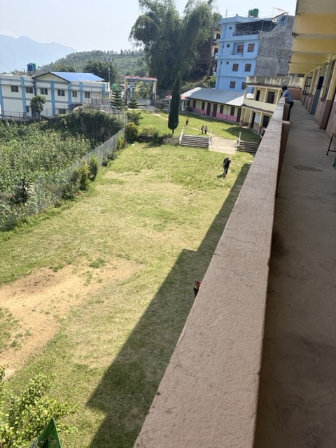
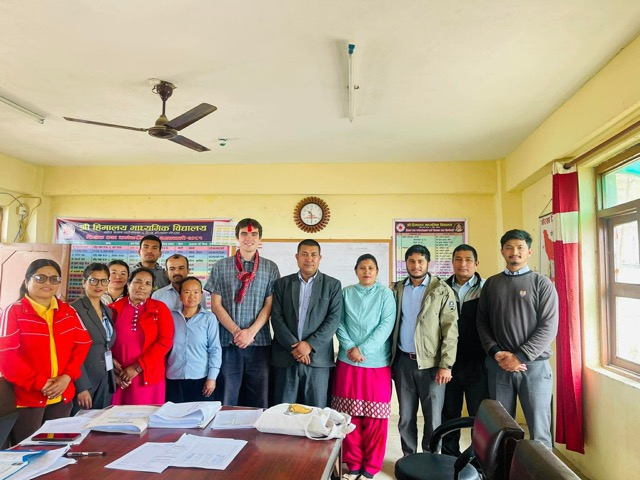
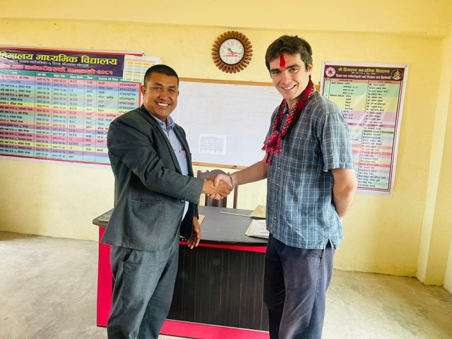
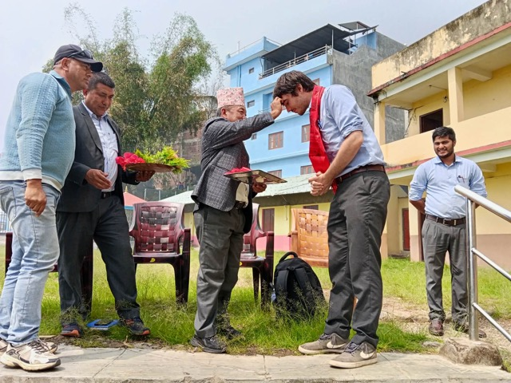
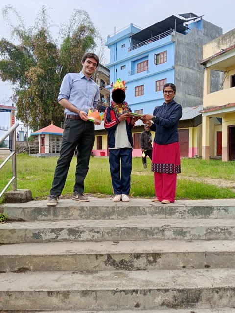

Thoughts on Blogging; Some School Photos
Hello again,
It's been some time since I've written a blog post - about one month. One thing that's probably a bit important to note about myself is that with a project such as this one, I love the setup. Building the site, hosting it, designing it to work for both mobile and desktop is a blast. Technical upkeep is important to me - if something breaks from a technical standpoint, it must be fixed. That being said, upkeep in terms of actually posting more is not my strong suit. Once the technical aspects of a project are over I often quickly move on.
Obviously, that is not the plan with this site - I made a blog so that I could share about what's new with me. Frankly, I'm not usually big on sharing in this capacity. If you visit any of the several social media pages that I've created over the years (facebook, instagram, etc) you'll find virtually no current activity, unless I'm feeling a little zany. I've found that it's not usually how I prefer to interact with people. At risk of sounding a little pretentious, it always felt a little bit one-way to me. If I wanted to share what was happening with me to someone, I would give them a call and speak to them directly, or they would call me if they wanted to know. Direct communication is a skill that I'll admit I'm not perfect at, but much prefer to putting out a bunch of information under the premise that several people will see it and I don't have time to talk to all of them so here you go.
And yet, here I am, writing my blog post. Admittedly, what I described at the end of that last paragraph is part of why I made this blog. Maybe it would have been easier to just reactivate old social media accounts, but what's the fun in that? Additionally, this page is much more cute than any social media that I've used (Maybe worth looking into myspace again..)
Anyway, I digress. As the benevolent dictator of this website for life I reserve the right to tangents. I'll talk a bit about the notable events of the past few weeks.
Teaching has been going well - I don't believe I've talked much about it on the blog yet. I teach 4th, 5th, and 7th grade at the local secondary school. It is roughly a six minute walk from my house to the school. When teaching, I usually work with a counterpart at the school - a Nepali English teacher. This system works well as they have more experience teaching to the Nepali students, and can help with translating, whereas I have stronger English than them, not to mention a different accent which helps the students learn a bit more broadly.
The School Courtyard

The kids are kids. They are a joy to be around, interested in learning, and very curious. I haven't spent a lot of time in a classroom setting in the US, but from what I've seen the kids here are not so different. They'll pay attention if you keep them engaged, keep the lessons interesting, and listen to them. If not, their attention will go elsewhere. When I arrive in the morning, practically every child individually says good morning to me. Several of the younger children have recently discovered that if they hold their hand out, I will shake it. A few of them have not yet learned that after shaking someone's hand, you're supposed to let go.
I've been playing a bit of soccer with the older kids, though I'll admit it's been a bit taxing on my wardrobe. I have two pairs of shoes here, a pair of sneakers and a pair of boots. The kids will play rain or shine, even if the field is covered in pools of water, and my flat bottomed sneakers do not handle well on grass, let alone small lakes. I intend to pick up some cleats (they call them "boots") next time I visit our district center (about an hour and a half drive by bus from here). It's fun playing soccer with them, though I have to remember to politely decline in the future if it's recently rained. As we approach monsoon season, that may prove to be difficult, but we will see.
Generally I'm refraining from posting pictures of children on here, but I do have some photographs of me and the other school staff. I was recently added to the teacher group chat and now have access to all the photos they've shared, so here are a few.
My Initial Welcome Ceremony

Me and The Principal

My School-Wide Welcome Ceremony

Celebrating a Birthday

In writing that last bit about the birthday, it reminded me of a funny manerism that I've noticed with the students here - during assembly, if they are clapping for a prolonged period of time, eventually it becomes rhythmic. The initial and random nature of applause will slowly warp into a steady beat, one that it seems that no one in particular had decided on but as it becomes apparent everyone agrees on. In the same way that when you sing happy birthday, no one can decide on the pitch initially until enough people have agreed on one, when they give applause a sort of parallel phenomenon happens. In particular, this rhythm will usually be the beat to which they sing happy birthday, but I've heard the rhythm occur other times when there was no intention of singing as well.
Anyway, That's all for this blog post. As always, thank you for reading!
- Basanta